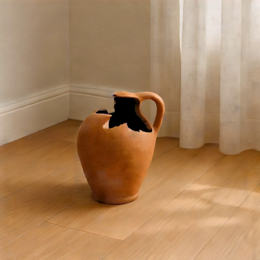
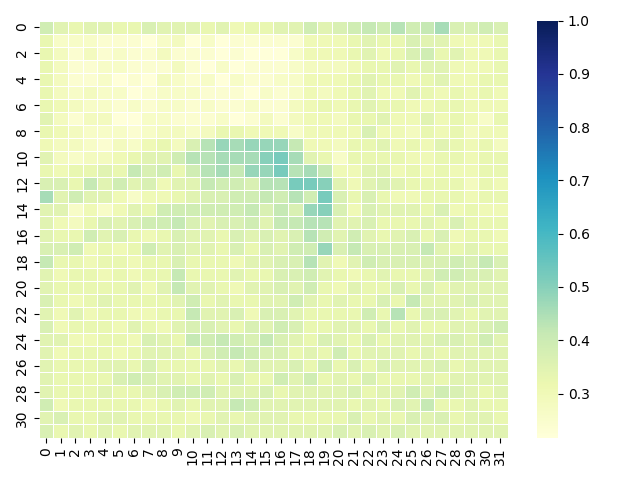
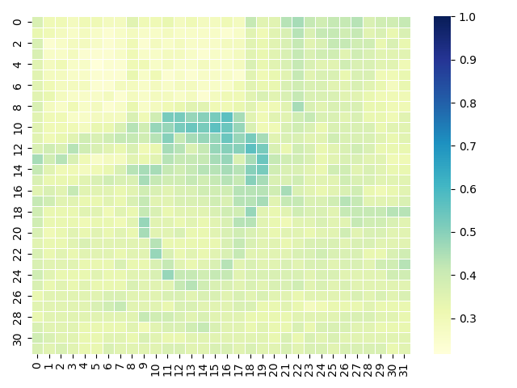
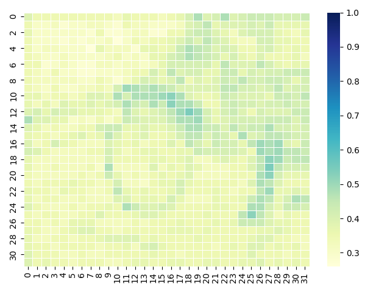
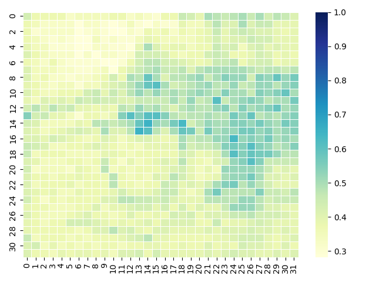
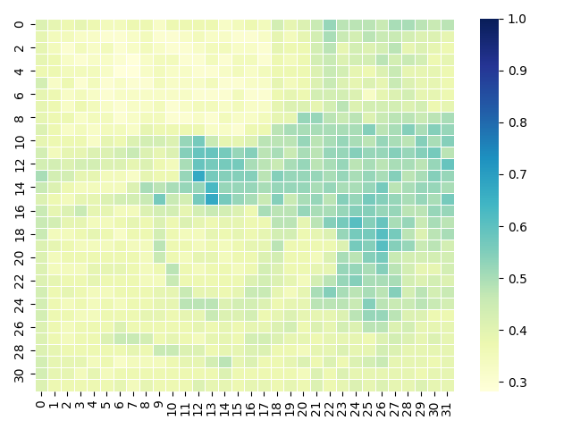
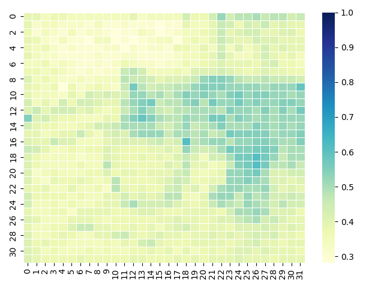
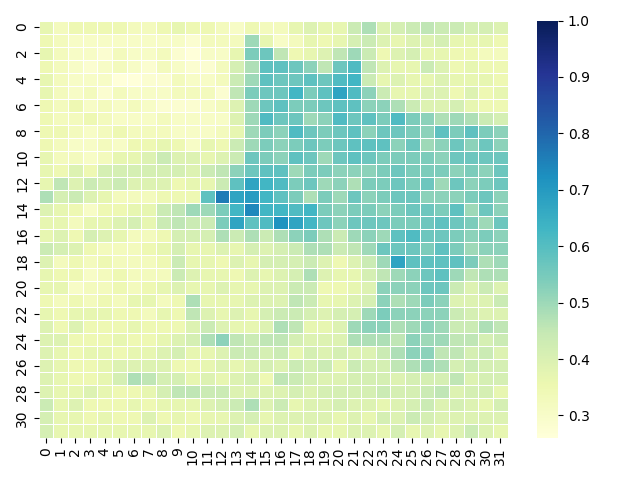
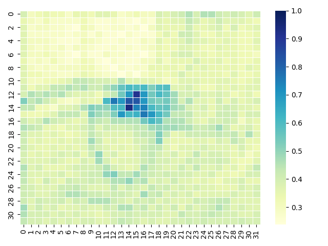

ReasonDiff: Reasoning-based Video Generation under Unpaired Text-Image Conditions
Abstract
Text-image to video generation aims to synthesize a video highly aligned with the given image and text conditions. However, existing methods fail to deal with the situation when the given image and text are unpaired, i.e., the events they describe are timestamped separately, where the condition image may be at an arbitrary position in the final video, rather than the first frame. This raises the challenge to reason about the intrinsic connections between the two modalities. To address this, we propose ReasonDiff for unpaired text-image to video generation. Concretely, we leverage the strong reasoning capabilities of a multi-modal large language model (MLLM) to analyze the unpaired image and text condition, generating a plausible per-frame narrative to temporally align them. The MLLM will deduce the most likely position of the condition image within the final generated video. We further introduce an AlignFormer module, which predicts the latent for each frame based on both the condition image and the per-frame narrative guidance. These reasoning enhanced latents are then fused with the initial noisy latents in the diffusion model to guide the generation process. Extensive experiments and ablation studies demonstrate that ReasonDiff significantly improves video generation quality under unpaired text-image conditions.
Method

Framework of the proposed ReasonDiff model, which mainly consists of two components. For given unpaired image and text conditions, MLLM Driven Multi-frame Reasoner will analyze them and reason out the whole scene, frame-wise, to align the two modalities temporally. This reasoning enhanced information will then be sent into the diffusion model and fused with the initial noisy latents to guide the generation process. The detailed architecture of the proposed AlignFormer module in MLLM Driven Multi-frame Reasoner is illustrated in the upper-right region.
Generated Samples
 |
 |
|||
| "A cat plays in the room." | (The cat broke the vase) | "A person opens the window." | (The wind will blow the pages) | |
 |
 |
|||
| "A dog walking on the road.." | (The dog will walk past the bicycle.) | "A cat plays in the room.." | (The chair is broken by the cat.) | |
 |
|
|||
| "A soccer flying.." | (The window is broken by the soccer.) | "A dog plays in the room.." | (The dog broken the vase.) | |
 |
 |
|||
| "Car running on the road.." | (The car runns past the dog.) | "A man whistles.." | (The dog runs happily to the man.) | |
Quantitative Comparison
Table 1. Quantitative results on the self-constructed dataset.
| Models | Imaging Quality | Motion Smoothness(VBench) | Dynamic Degree | CLIP-Text | CLIP-Image | Motion Magnitude | Motion Smoothness(Worldscore) |
|---|---|---|---|---|---|---|---|
| SparseCtrl | 0.503(0.083) | 0.977(0.015) | 0.620(0.485) | 0.079(0.042) | 0.524(0.061) | 6.75(3.22) | 30.17(5.12) |
| I2VGen-XL | 0.523(0.130) | 0.954(0.030) | 0.879(0.336) | 0.092(0.049) | 0.464(0.094) | 31.83(5.79) | 32.01(4.98) |
| Dynamicrafter | 0.492(0.111) | 0.979(0.019) | 0.484(0.499) | 0.202(0.057) | 0.508(0.087) | 14.10(4.02) | 32.66(5.51) |
| ConsistI2V | 0.505(0.123) | 0.972(0.019) | 0.594(0.491) | 0.096(0.046) | 0.521(0.085) | 28.68(5.59) | 33.81(5.10) |
| SVD | 0.474(0.110) | 0.976(0.014) | 0.606(0.488) | 0.225(0.058) | 0.535(0.097) | 16.14(3.77) | 32.94(2.68) |
| CogVideoX | 0.507(0.086) | 0.949(0.023) | 0.872(0.089) | 0.197(0.039) | 0.537(0.078) | 44.44(5.78) | 33.18(2.54) |
| LTX-Video | 0.398(0.081) | 0.977(0.008) | 0.734(0.442) | 0.211(0.051) | 0.544(0.084) | 7.27(2.55) | 34.41(2.79) |
| Wan2.1 | 0.512(0.103) | 0.980(0.023) | 0.810(0.28) | 0.224(0.056) | 0.518(0.079) | 20.90(4.12) | 33.02(2.85) |
| ReasonDiff | 0.516(0.104) | 0.984(0.041) | 0.882(0.323) | 0.252(0.052) | 0.507(0.074) | 46.47(5.59) | 34.61(1.89) |
Table 2. Quantitative results on MSR-VTT dataset.
| Models | Imaging Quality | Motion Smoothness(VBench) | Dynamic Degree | CLIP-Text | CLIP-Image | Motion Magnitude | Motion Smoothness(Worldscore) |
|---|---|---|---|---|---|---|---|
| SparseCtrl | 0.402(0.098) | 0.912(0.021) | 0.388(0.503) | 0.187(0.039) | 0.562(0.090) | 6.89(2.12) | 29.85(3.77) |
| I2VGen-XL | 0.536(0.135) | 0.942(0.036) | 0.505(0.293) | 0.208(0.039) | 0.567(0.082) | 24.2(4.19) | 30.26(3.32) |
| Dynamicrafter | 0.517(0.123) | 0.984(0.017) | 0.440(0.496) | 0.201(0.043) | 0.526(0.091) | 12.77(3.65) | 31.08(3.60) |
| ConsistI2V | 0.378(0.091) | 0.964(0.027) | 0.572(0.469) | 0.192(0.042) | 0.501(0.083) | 30.56(5.83) | 33.26(4.73) |
| SVD | 0.477(0.119) | 0.978(0.014) | 0.605(0.488) | 0.208(0.041) | 0.570(0.096) | 18.36(4.00) | 33.11(3.98) |
| CogVideoX | 0.552(0.082) | 0.970(0.015) | 0.688(0.323) | 0.177(0.250) | 0.572(0.059) | 34.61(4.48) | 33.40(2.54) |
| LTX-Video | 0.406(0.087) | 0.986(0.010) | 0.695(0.460) | 0.206(0.037) | 0.588(0.078) | 7.12(2.49) | 33.83(3.01) |
| Wan2.1 | 0.560(0.111) | 0.962(0.023) | 0.665(0.183) | 0.191(0.036) | 0.552(0.075) | 26.17(4.24) | 33.53(2.64) |
| ReasonDiff | 0.571(0.108) | 0.984(0.017) | 0.673(0.434) | 0.214(0.047) | 0.572(0.073) | 41.98(3.95) | 33.89(2.71) |
Table 3. Quantitative results on UCF-101 dataset.
| Models | Imaging Quality | Motion Smoothness(VBench) | Dynamic Degree | CLIP-Text | CLIP-Image | Motion Magnitude | Motion Smoothness(Worldscore) |
|---|---|---|---|---|---|---|---|
| SparseCtrl | 0.302(0.069) | 0.934(0.028) | 0.379(0.460) | 0.168(0.033) | 0.535(0.048) | 7.20(2.98) | 25.77(4.15) |
| I2VGen-XL | 0.481(0.087) | 0.940(0.032) | 0.622(0.267) | 0.164(0.033) | 0.561(0.067) | 43.39(5.62) | 31.20(1.04) |
| Dynamicrafter | 0.419(0.083) | 0.980(0.025) | 0.356(0.478) | 0.177(0.038) | 0.541(0.053) | 13.53(4.18) | 29.85(3.36) |
| ConsistI2V | 0.465(0.130) | 0.969(0.025) | 0.615(0.486) | 0.172(0.030) | 0.552(0.054) | 48.32(7.54) | 32.60(3.81) |
| SVD | 0.380(0.079) | 0.982(0.010) | 0.489(0.499) | 0.182(0.029) | 0.569(0.056) | 15.24(3.48) | 32.96(2.38) |
| CogVideoX | 0.468(0.043) | 0.972(0.012) | 0.880(0.327) | 0.179(0.024) | 0.572(0.041) | 20.11(4.35) | 34.34(2.24) |
| LTX-Video | 0.346(0.058) | 0.988(0.018) | 0.761(0.426) | 0.189(0.023) | 0.552(0.062) | 7.69(3.22) | 33.29(2.17) |
| Wan2.1 | 0.446(0.077) | 0.948(0.027) | 0.883(0.127) | 0.196(0.040) | 0.571(0.044) | 44.87(5.34) | 33.22(2.02) |
| ReasonDiff | 0.470(0.092) | 0.988(0.017) | 0.899(0.314) | 0.192(0.035) | 0.542(0.052) | 52.54(5.47) | 34.15(2.43) |
Qualitative Comparison
|
|
||||
| Condition Image A person opens the window. | ReasonDiff | |||
| SparseCtrl | I2VGen-XL | Dynamicrafter | ConsistI2V | |
| SVD | LTX-Video | CogVideoX | Wan2.1 | |
|
|
||||
| Condition Image A soccer flying | ReasonDiff | |||
| SparseCtrl | I2VGen-XL | Dynamicrafter | ConsistI2V | |
| SVD | LTX-Video | CogVideoX | Wan2.1 | |
Wan2.1 v.s Wan2.1+ReasonDiff

|
||||
| Condition Image A soccer flying | Wan2.1 | Wan2.1+ReasonDiff | ||
|
|
||||
| Condition Image A person opens the window | Wan2.1 | Wan2.1+ReasonDiff |
Attention Map Illustration
 |
||||
| Condition Image A cat plays in the room | ReasonDiff | |||
 |
 |
 |
 |
|
| Frame 0 | Frame 16 | Frame 32 | Frame 44 | |
 |
 |
 |
 |
|
| Frame 60 | Frame 72 | Frame 84 | Frame 96 |
Averaged attention scores between the CLIP-encoded embedding of the word breaking and the hidden states of the video frames in the second Transformer block.